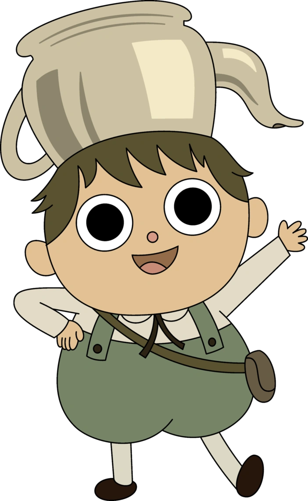

🎕
🎕
🎕
🎕
Un mensaje de Lo Desconocido
¿Aceptas ir conmigo a una date?
"Nadie sabe dónde lleva el camino, pero entre historias antiguas, misterios y canciones de ranas... prometo que la pasaremos genial."

✦ Detalles de la date ✦
Fecha y Hora:
Domingo 18 de octubre, 12:00 PM
Lugar:
Cafeteria El Circulo zona 1